In this week, as Group assignment we had to Characterize the design rules for our 3D Printer.Simillarly for Individual assignment i had to make a 3D design which cant be made subtractively.
3D printing
3D printing or additive manufacturing is a process of making three dimensional solid objects from a digital file. The creation of a 3D printed object is achieved using additive processes. In an additive process an object is created by laying down successive layers of material until the object is created.The starting point for any 3D printing process is a 3D model, which can be created using a of 3D software or scanned with a 3D scanner. The model is then ‘sliced’ into layers, thereby converting the design into a file readable by the 3D printer. The material processed by the 3D printer is then layered according to the design and the process.
Ender3 3D printer
I Have a Creality Ender 3 3D printer in my home. So tried to explore the resolution and done the tests using the printer. The Specifications of the machine is given below:
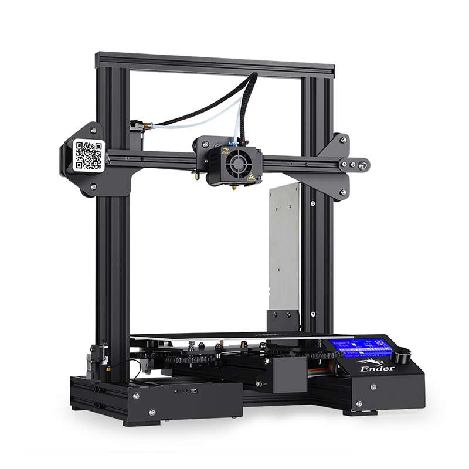
Print Size: 220*220*250mm
Layer Height: 0.1-0.4mm
Resolution=0.1mm
Max Extruder Temp: 255 Deg C
Max bed Temp: 100 deg C
Bed levelling: Manual
Filament size: 1.75mm
Extruder: Single extruder
Material: PLA
For characterisation of the machine, i downloaded an all in one test image from "Thingiverse" website which is available here and the over hang test file is available here to download. Simillarly, retraction test file can be downloaded from here
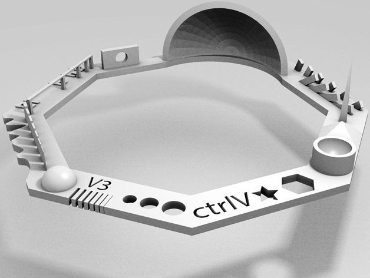
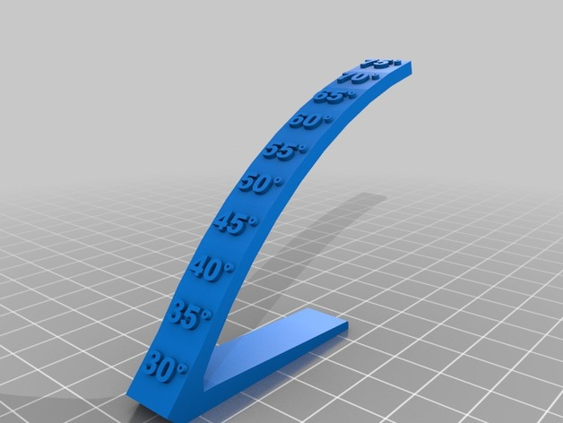
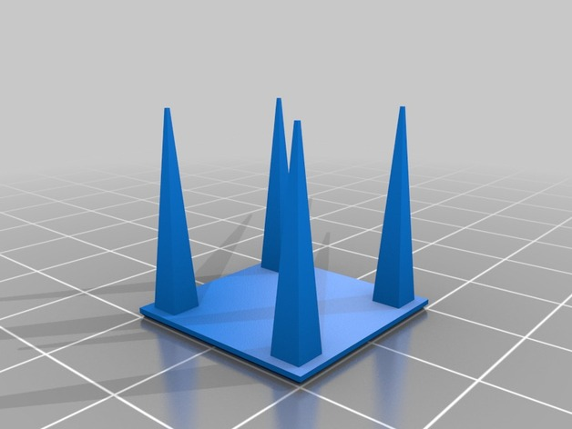
First step is to open these .stl files in Cura slicer software, where i can perform some basic pre printing tasks like support, scale, orientation etc. While printing both the designs i selected No support, 100 % scaling,Infill:20%. After saving the settings i need to slice it to convert it into .gcode which can be understood by the 3d printer. Then transfer the gcode into the sd card and insert it to the 3D printer to start the print process.
In the 3D printer, power ON the printer, Make sure that the bed is perfectly levelled and filament is fed to the nozzle. Then browse the .gcode file which needs to be printed and select OK. Then the printer should automatically heat the bed and nozzle and then start the printing process.
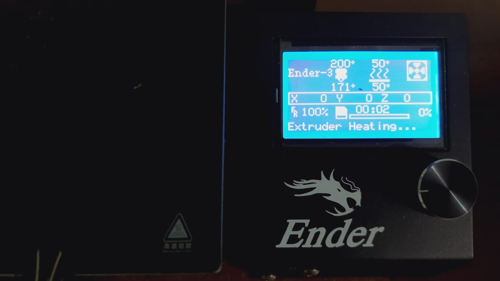
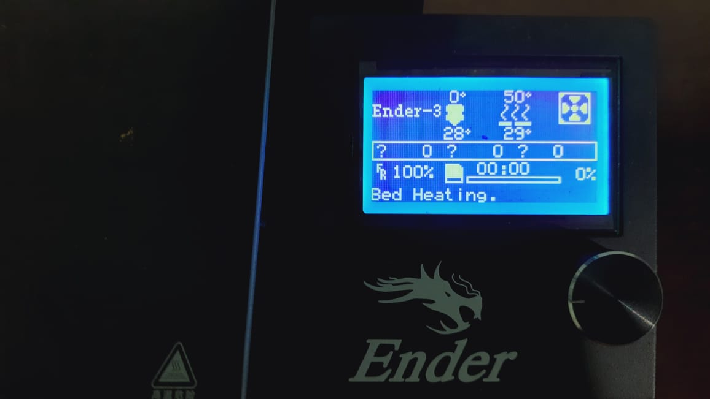
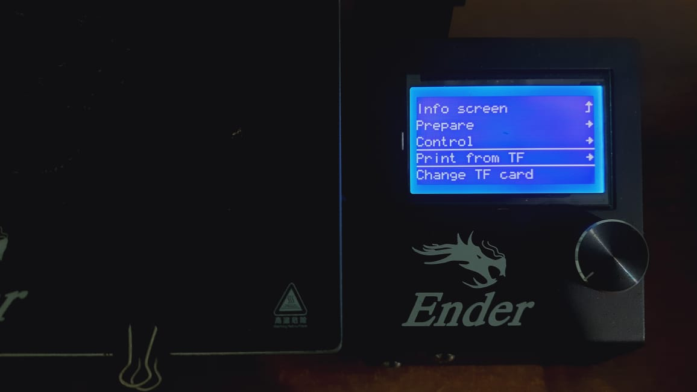
After completion of the printing Remove the printed objects from the bed carefully.The completed printed objects are shown as below:
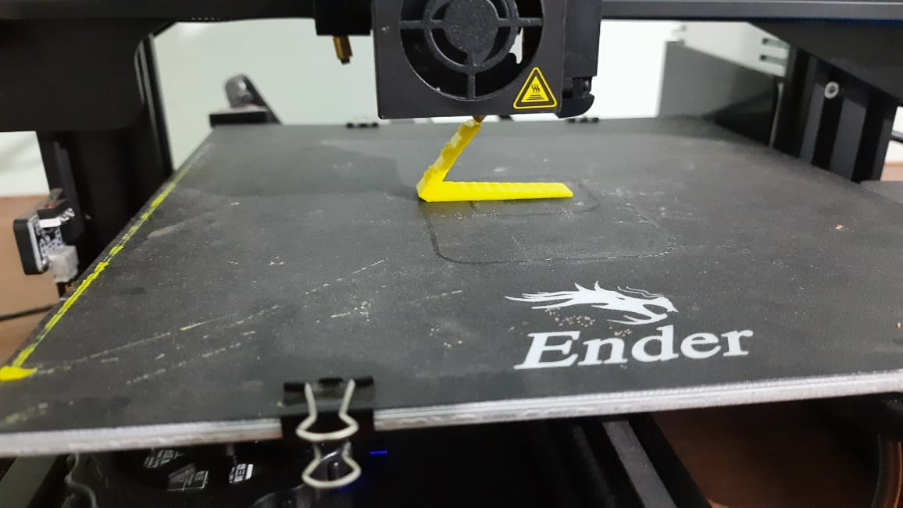
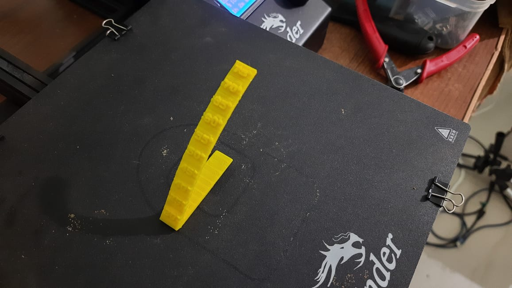
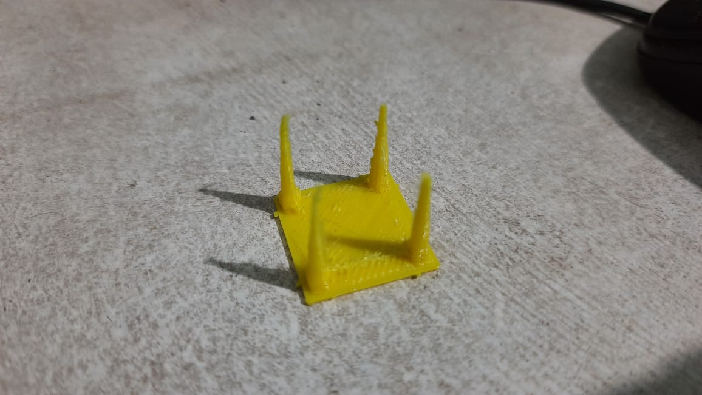
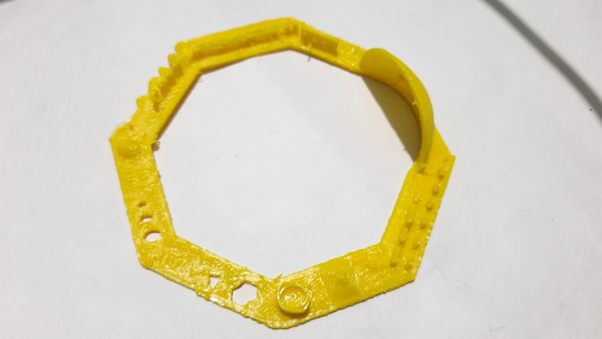
As shown in the figure above, the retraction test and overhang test results are quite good and upto the mark. But in the All in one test several tests like bridge, dimenstion has not came very accurate.
Designing a Spoon:
For individual assignment, i planned to design a Spoon which i designed using Fusion 360 software. The steps to design the spoon is shown as below.For the designing of spoon i used various tools like Extrude, Revolve, shell, fillet etc.
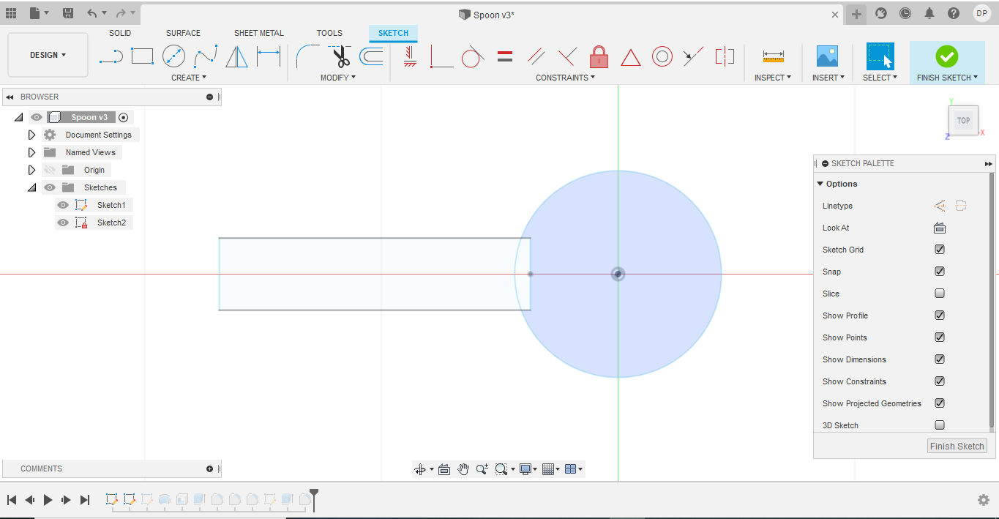
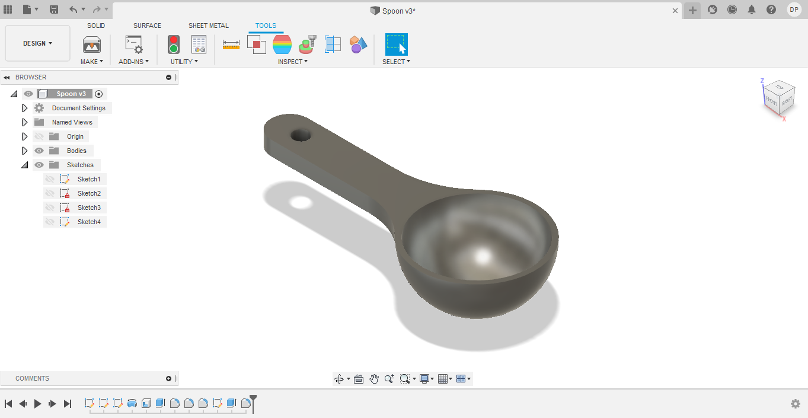
After completion of designing the object, i exported it into .stl file which can be used for 3d printing. Then i exported it in CURA software for the necessary tasks like support.Then the final step is to export the .gcode and print it in the 3D printer.
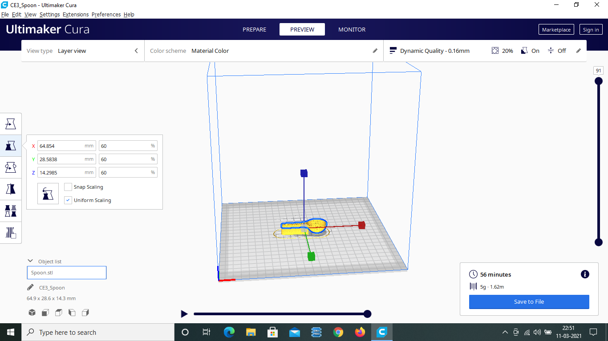
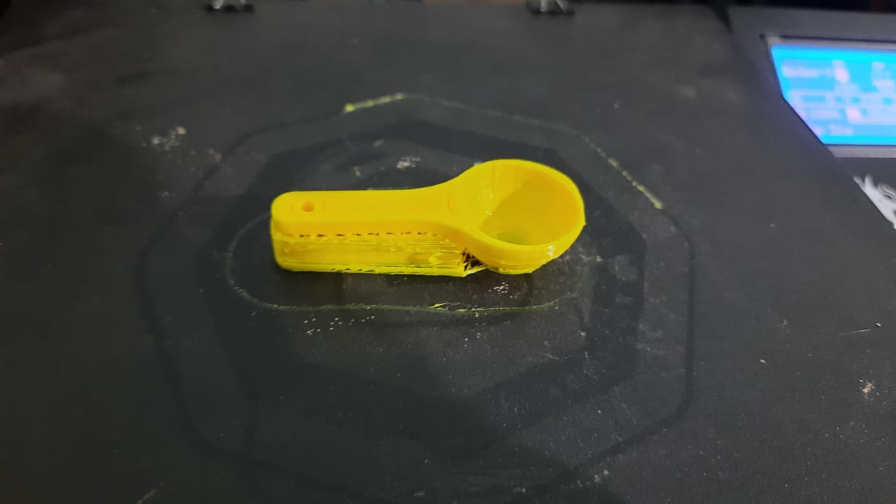
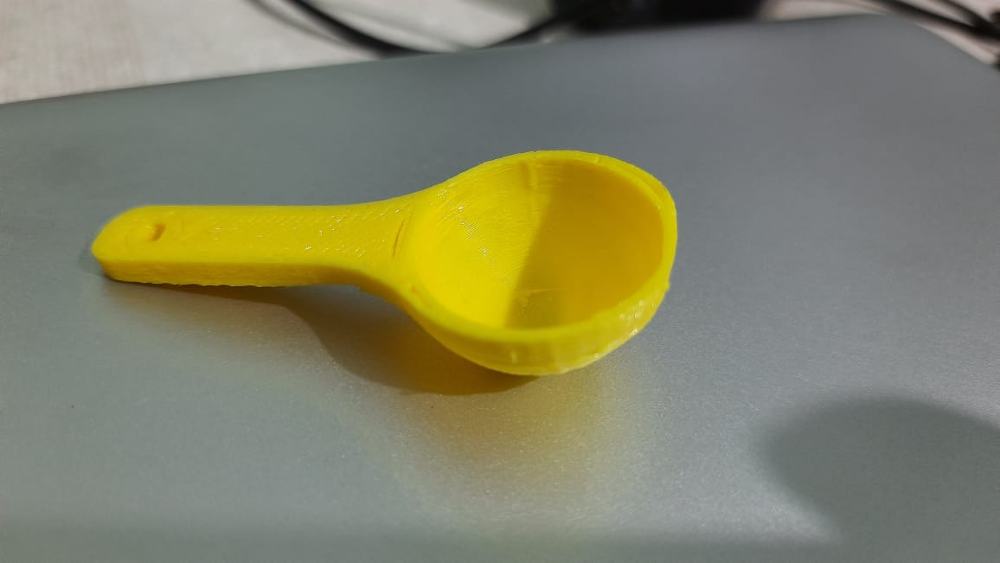
3D Scanning:
3D scanning is a technology for creating high-precision 3D models of real-world objects by scanning them.Usually a 3D scanner takes multiple snapshots of an object in all possible directions. The shots are then combined into a 3D model, an exact three-dimensional copy of the object, which we can rotate and view from different angles.
How 3D Scanners work?
This technology is based on the idea of using light to capture the geometry of the physical world. This can be done at a variety of different distances. Because the major component is light, different distances require different machines that can operate at those focal points.
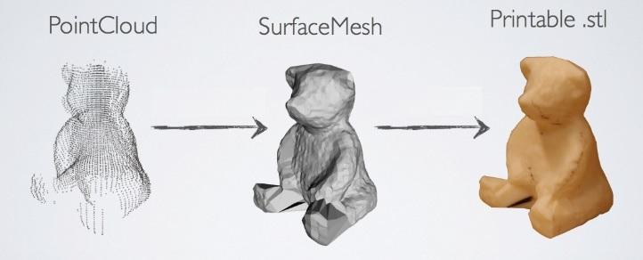
3D Scanning with Qlone Mobile App:
Qlone is a mobile app which allows us to 3D scan, upload, and export 3D objects in a variety of formats for modification in the 3D software or printing with the 3D printer.The scanning process starts with a piece of paper–the AR mat. The AR mat can be downloaded from the mobile app.Then view the mat through the app to establish an AR dome which takes your object and captures the 3D proportions. Slower movements and bright lighting help product better detail capture and hence better scans. An option to auto-merge different angles of the same object will help produce higher quality results as well.After completion of scan process it gives option to export the 3D scanned file to many file formats.
I have taken a USB Adopter as shown in the figure to scan. I placed it on the AR mat and scan as discussed.After completion of the scan the object comes out to as shown which is pretty good.Though it has some noise but it was good to go and quite interesting.